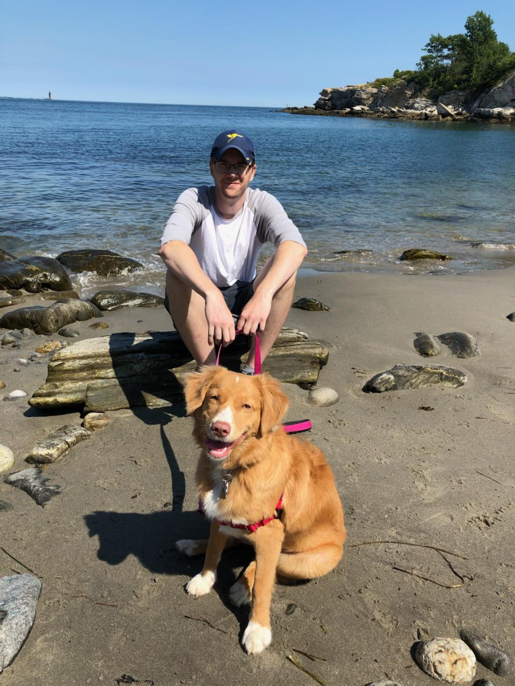

Elick Coval
Computer Science Student
University of Massachusettes Lowell
Graduating May 2020
- Building/Creating with code
- Traveling
- Watching and listening to high fidelity movies/music
- Walking
- Reading
Skills I Hope to Improve
- Javascript
- Bootstrap
- Angular/React